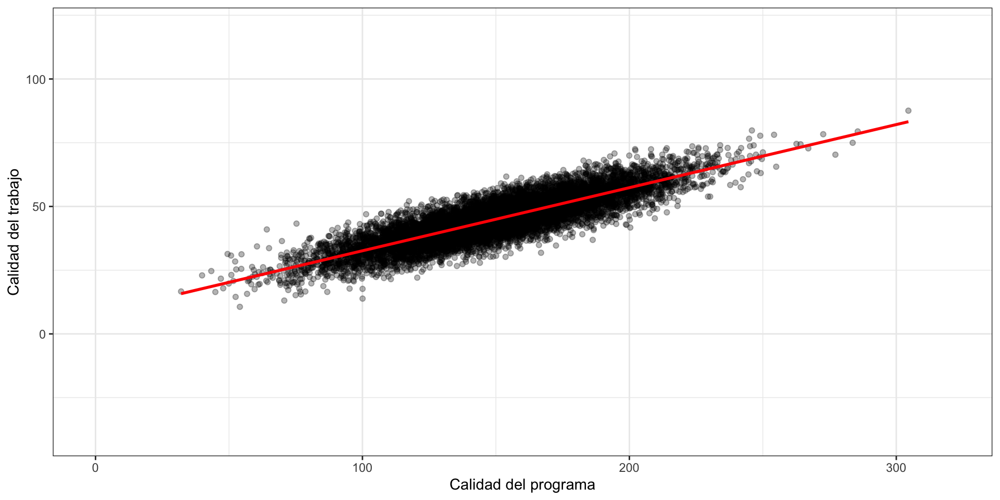

Introducción a los diseños cuasi-experimentales
Inferencia causal: resultados potenciales y modelos gráficos
Pablo Geraldo
15/11/2022
Plan de sesiones
\[\newcommand\indep{\perp\!\!\!\perp}\] \[\newcommand\nindep{\not\!\perp\!\!\!\perp}\]
Sesión 1
- Introducción a los lenguajes de inferencia causal
- Resultados potenciales (Potential Outcomes)
- Modelos gráficos (Directed Acyclic Graphs)
Sesión 2
- Experimentos y cuasi experimentos
- ¿Por qué aleatorizar?
- ¿Qué hacer cuando no es posible aleatorizar? Diseños cuasi-experimentales
Sesión 3
- Ejercicios prácticos
- Replicación conceptual y de resultados
- Discusión de propuestas de investigación
Causalidad
¿Por qué estudiar inferencia causal?
“Revolución de credibilidad” en las ciencias sociales (Angrist and Pischke, 2010), “revolución de identificación” (Morgan, 2016), o simplemente “revolucion causal” (Pearl y MacKenzie, 2018)
En inteligencia artificial, diversos autores han declarado el pensamiento causal como la “proxima frontera”, y “el tema más importante por venir”
El enorme progreso realizado en las últimas décadas se debe en gran parte al desarrollo de un lenguaje apropiado para formalizar preguntas de tipo causal: resultados potenciales (potential outcomes) y el modelo causal estructural (structural causal model)
¿Qué esperar de la sesión de hoy?
Dadas las restricciones de tiempo, en este intensivo podremos enfocarnos solo en algunos aspectos relacionados a la inferencia causal:
Familiarizarse con los marcos conceptuales más comunmente utilizados en inferencia causal
Utilizar resultados potenciales y do-operator para formalizar cantidades causales
Comprender el rol de la aleatorización para responder preguntas causales
Utilizar modelos gráficos (DAGs) para expresar supuestos cualitativos
Derivar resultados de identificación a partir de supuestos
Evaluar la plausibilidad de distintos supuestos y estrategias de identificación.
Al finalizar las tres sesiones, espero que se sientan mejor equipados para leer y evaluar la literatura aplicada, así como para diseñar sus propios estudios con las estrategias adecuadas.
¿Qué no cubriremos hoy?
La inferencia causal es un area activa de investigación y de contornos difusos. Temas que podrían interesarles pero no cubriremos en este taller:
Estimación secuencial para tratamientos que varían en el tiempo
Problemas de estimación, incluyendo ML methods
Métodos para estudiar efectos heterogéneos
Cálculos de identificación (do-calculus y po-calculus)
Mediación y atribución causal
Otros modelos gráficos (MCM, SWIGs, Hypothetical Model)
Modelos gráficos de selección para tratar datos pérdidos
Fusión de datos (generalización y validez externa)
Descubrimiento causal (partir de los datos y llegar al modelo)
Intuiciones causales
“Correlación no implica causalidad”
“No hay causalidad sin manipulación”
“La inferencia causal es un problema de datos perdidos”
“En inferencia causal, el diseño vence al análisis”
¿Pero podemos ir de una a otra?
¿Qué ocurre con raza y género?
¿O viceversa?
¿Pero qué queremos decir con “diseño” o “análisis”?
¿De qué se trata esto?
Estadística/ML
Observación pasiva del proceso generador de datos
Estimando probabilidades conjuntas y esperanzas condicionales \[P[Y,X]\] \[E[Y\mid X]\]
Problema de estimación: dicotomía entre sesgo y varianza
Foco en teoría asintótica y predicción fuera de la muestra
Inferencia causal
Predicción de resultados bajo intervenciones
Estimando probabilidades inducidas por una intervencion y diferencias entre resultados potenciales \[P[Y \mid do(x)]\] \[E[Y_x - Y_{x'}]\]
Problema de identificación: consistencia en “muestras infinitas”
Foco en sesgo sobre varianza
La escalera de la causalidad
| Estimando | Actividad | Disciplina | Pregunta | Ejemplo |
|---|---|---|---|---|
| \(\mathbf{P(Y \vert X)}\) | Ver, Observar | Estadística, ML | ¿Cómo afecta X mi creencia sobre Y | ¿Cual es el ingreso esperado de un profesional? |
| Estimando | Actividad | Disciplina | Pregunta | Ejemplo |
|---|---|---|---|---|
| \(\mathbf{P(Y \vert do(x))}\) | Hacer, Intervenir | Experimentos | ¿Qué ocurre con Y si hago X? | ¿Cual sería mi ingreso si decido ir a la universidad? |
| Estimando | Actividad | Disciplina | Pregunta | Ejemplo |
|---|---|---|---|---|
| \(\mathbf{P(Y_x \vert x',y')}\) | Imaginar, Retrospección | Modelos estructurales | ¿Que hubiese ocurrido con Y si hubiese hecho X en vez de X’? ¿ Por qué? | ¿Cual sería el ingreso de mis padres si hubiesen ido a la universidad, dado que no fueron? |
¿Es “hacer” realmente diferente de “observar”?

¿Es “hacer” realmente diferente de “observar”?
Imaginemos un ejemplo: ¿Cual es el efecto de tu programa de estudios en la calidad de tu primer trabajo?
library(ggplot2)
set.seed(1988)
# muestra
N <- 10000
# selecitividad estudiantes
W <- rnorm(N, mean=250, sd=50)
# "calidad" del programa
X <- 0.6*W + rnorm(N, mean=0, sd=10)
# calidad del trabajo
Y <- 0.3*W - 0.2*X + rnorm(N)
data <- data.frame(Y=Y, X=X, W=W)
ggplot(data, aes(x=X, y=Y)) +
geom_point(alpha=0.3) +
geom_smooth(method="lm", color="red") +
labs(x = "Calidad del programa",
y = "Calidad del trabajo") +
scale_x_continuous(limits = c(0,320)) +
scale_y_continuous(limits = c(-40,120)) +
theme_bw()
¿Es “hacer” realmente diferente de “observar”?
¿Qué nos diría una regresión lineal?
Call:
lm(formula = Y ~ X, data = data)
Coefficients:
(Intercept) X
7.8506 0.2476 ¿Es “hacer” realmente diferente de “observar”?
¿Qué ocurre si los estudiantes son asignados aleatoriamente a cada programa?
Call:
lm(formula = Ytrue ~ Xrand, data = data)
Coefficients:
(Intercept) Xrand
75.262 -0.202 ¿Es “hacer” realmente diferente de “observar”?
¿Podemos solucionar el problema ajustando por selectividad?
Call:
lm(formula = Y ~ X + W, data = data)
Coefficients:
(Intercept) X W
0.02049 -0.20011 0.29996 ¿Es “hacer” realmente diferente de “observar”?
Finalmente, ¿de dónde estamos obteniendo los datos?
Call:
lm(formula = Ytrue ~ Xrand, data = dplyr::filter(data, C == 1))
Coefficients:
(Intercept) Xrand
64.6809 -0.1581 Resultados Potenciales
Resultados potenciales
Marco ideado por Neyman (1923) en el contexto de diseño experimental en agricultura.
Por décadas su uso permaneció en ese contexto.
Importados y desarrollados por Donald Rubin, aplicándolos a estudios observacionales (c. 1974)
Son de gran utilidad para clarificar qué queremos saber (estimand)
Esto incluye identificar las razones de la discrepancia entre lo que observamos y la cantidad de interés (sesgo)
Utiles para formalizar lo que debe sostenerse para identificar un efecto de interés (supuestos)
Son algo menos útiles para evaluar si los supuestos invocados son creíbles en determinada aplicación
Definiciones y notación
Comencemos con algunas definiciones
\(Y\) es la variable de resultado, tal como la observamos
\(X\) es la variable de interés (exposición, tratamiento)
\(Y_x\) es el resultado potencial cuando manipulamos el valor de \(X\) para que sea \(x\). Por ejemplo, con un tratamiento binario
\(Y_1\) es el resultado potencial bajo tratamiento (\(X=1\))
\(Y_0\) es el resultado potencial bajo control (\(X=0\))
Consistencia
Existen diversas maneras, equivalentes entre sí, de denotar los resultados potenciales.
Puede resultar confuso, pero es una buena práctica moverse entre variantes (necesario para conocer la literatura)
\[Y(x) = Y_x = Y^x\]
Se lee así: El valor que la variable \(Y\) tomaría si manipulamos el valor de la variable \(X\) para que tome el valor \(x\)
Consistencia: también conocido como SUTVA (Stable Unit Treatment Value Assumption)
\[X=x \rightarrow Y = Y_x\]
Para el caso binario: \(Y = XY_1 + (1-X) Y_0\)
¿Qué supuestos están implicados en esta notación? ¿Qué tipo de dependencias estamos descartando?
Actividad breve (3-5 minutos)
(Al menos) en sociología, existe la tendencia a formalizar los efectos de interés como coeficientes de regresión (en otras palabras, las hipótesis son formuladas dentro de un modelo estadístico)
Los resultados potenciales son una manera de formalizar los efectos causales de interés fuera de cualquier modelo estadístico.
Esto nos permite separar claramente aquello que queremos estimar (estimand), la maquinaria estadística que utilizamos para responder nuestra pregunta (estimator), y la respuesta concreta que obtenemos de un modelo (estimate)
Lundberg, Johnson, y Stewart (2021) es una excelente referencia para discutir en detalle este punto.
Dediquemos un momento para pensar en sus propias investigaciones:
- ¿Qué pregunta causal es relevante en tu área de estudios?
- ¿Puedes formularla utilizando resultados potenciales?
- ¿Qué supuestos están implicados en esta formalización?
La tabla de la ciencia
| Unidad | \(X_i\) | \(Y_i\) | \(Y_{ai}\) | \(Y_{bi}\) | \(\tau_i\) |
|---|---|---|---|---|---|
| 1 | A | 1 | 1 | 1 | 0 |
| 2 | A | 0 | 0 | 0 | 0 |
| 3 | A | 0 | 0 | 1 | -1 |
| 4 | A | 1 | 1 | 0 | 1 |
| 5 | A | 1 | 1 | 1 | 0 |
| 6 | B | 0 | 1 | 0 | 1 |
| 7 | B | 0 | 1 | 0 | 1 |
| 8 | B | 0 | 0 | 0 | 0 |
| 9 | B | 1 | 0 | 1 | -1 |
| 10 | B | 1 | 1 | 1 | 0 |
Una de las ventajas de utilizar el marco de resultados potenciales es que podemos tratarlos directamente como variables aleatorias.
Es decir, todas las reglas de probabilidad siguen aplicando en este contexto.
La herramienta de cálculo, usualmente implícita, es la “tabla de la ciencia” (Rubin).
Basicamente, pretendemos que somos capaces de observar todos los resultados potenciales de interés, bajo distintos tratamientos.
Effecto Causal Promedio (ATE)
| Unidad | \(X_i\) | \(Y_i\) | \(Y_{ai}\) | \(Y_{bi}\) | \(\tau_i\) |
|---|---|---|---|---|---|
| 1 | A | 1 | 1 | 1 | 0 |
| 2 | A | 0 | 0 | 0 | 0 |
| 3 | A | 0 | 0 | 1 | -1 |
| 4 | A | 1 | 1 | 0 | 1 |
| 5 | A | 1 | 1 | 1 | 0 |
| 6 | B | 0 | 1 | 0 | 1 |
| 7 | B | 0 | 1 | 0 | 1 |
| 8 | B | 0 | 0 | 0 | 0 |
| 9 | B | 1 | 0 | 1 | -1 |
| 10 | B | 1 | 1 | 1 | 0 |
\[ATE = E[Y_{ai}] - E[Y_{bi}]\]
\[(6/10) - (5/10) = \color{blue}{0.1}\]
Diferencia de medias
| Unidad | \(X_i\) | \(Y_i\) | \(Y_{ai}\) | \(Y_{bi}\) | \(\tau_i\) |
|---|---|---|---|---|---|
| 1 | A | 1 | 1 | 1 | 0 |
| 2 | A | 0 | 0 | 0 | 0 |
| 3 | A | 0 | 0 | 1 | -1 |
| 4 | A | 1 | 1 | 0 | 1 |
| 5 | A | 1 | 1 | 1 | 0 |
| 6 | B | 0 | 1 | 0 | 1 |
| 7 | B | 0 | 1 | 0 | 1 |
| 8 | B | 0 | 0 | 0 | 0 |
| 9 | B | 1 | 0 | 1 | -1 |
| 10 | B | 1 | 1 | 1 | 0 |
\[ATE = E[Y_{ai}] - E[Y_{bi}]\]
\[(6/10) - (5/10) = \color{blue}{0.1}\]
\[E[Y_i \mid X_i = a] - E[Y_i \mid X_i = b]\] \[(3/5) - (2/5) = \color{red}{0.2}\]
diferencia de medias \(\neq\) ATE
¿Por qué?
Fuentes de sesgo
| Unidad | \(X_i\) | \(Y_i\) | \(Y_{ai}\) | \(Y_{bi}\) | \(\tau_i\) |
|---|---|---|---|---|---|
| 1 | A | 1 | 1 | 1 | 0 |
| 2 | A | 0 | 0 | 0 | 0 |
| 3 | A | 0 | 0 | 1 | -1 |
| 4 | A | 1 | 1 | 0 | 1 |
| 5 | A | 1 | 1 | 1 | 0 |
| 6 | B | 0 | 1 | 0 | 1 |
| 7 | B | 0 | 1 | 0 | 1 |
| 8 | B | 0 | 0 | 0 | 0 |
| 9 | B | 1 | 0 | 1 | -1 |
| 10 | B | 1 | 1 | 1 | 0 |
\[E[\text{delta medias}]\] \[= E[Y_i \mid X_i = a] - E[Y_i \mid X_i = b]\] \[= E[Y_{ai} \mid X_i = a] - E[Y_{bi} \mid X_i = b]\] \[= ATE +\] \[(E[Y_{bi} \mid X_i = a] - E[Y_{bi} \mid X_i = b]) +\] \[(1 - P[X])(ATT - ATC)\] \[= \color{blue}{\textbf{0.1}} + \color{red}{0.2} + \color{red}{(0.5)(-0.2)} = \color{red}{\textbf{0.2}}\]
Supuestos de identificación
| Unidad | \(X_i\) | \(Y_i\) | \(Y_{ai}\) | \(Y_{bi}\) | \(\tau_i\) |
|---|---|---|---|---|---|
| 1 | A | 1 | 1 | 1 | 0 |
| 2 | A | 0 | 0 | 0 | 0 |
| 3 | A | 0 | 0 | 1 | -1 |
| 4 | A | 1 | 1 | 0 | 1 |
| 5 | A | 1 | 1 | 1 | 0 |
| 6 | B | 0 | 1 | 0 | 1 |
| 7 | B | 0 | 1 | 0 | 1 |
| 8 | B | 0 | 0 | 0 | 0 |
| 9 | B | 1 | 0 | 1 | -1 |
| 10 | B | 1 | 1 | 1 | 0 |
Para que la diferencia de medias estimara sin sesgo el efecto causal de interés, necesitaríamos la siguiente condición (ignorabilidad condicional o selección basada en observables):
\[Y_x \indep X\]
¿Se cumple dicha condición aquí? ¡No!
\[\{Y_{ai}, Y_{bi} \nindep X\}\]
Porque
\[P(Y_a = y \mid X=a) \neq P(Y_a = y)\]
\[P(Y_b = y \mid X=b) \neq P(Y_b = y)\]
Ignorabilidad condicional
| Unidad | \(X_i\) | \(Y_i\) | \(Y_{ai}\) | \(Y_{bi}\) | \(\tau_i\) | \(W_i\) |
|---|---|---|---|---|---|---|
| 1 | A | 1 | 1 | 1 | 0 | Cuanti |
| 2 | A | 0 | 0 | 0 | 0 | Cuanti |
| 3 | A | 0 | 0 | 1 | -1 | Cuali |
| 4 | A | 1 | 1 | 0 | 1 | Cuanti |
| 5 | A | 1 | 1 | 1 | 0 | Cuali |
| 6 | B | 0 | 1 | 0 | 1 | Cuali |
| 7 | B | 0 | 1 | 0 | 1 | Cuanti |
| 8 | B | 0 | 0 | 0 | 0 | Cuali |
| 9 | B | 1 | 0 | 1 | -1 | Cuali |
| 10 | B | 1 | 1 | 1 | 0 | Cuanti |
¿Qué ocurre si incluimos una nueva variable, \(W_i\)?
¿Se cumple la siguiente condición? \[ Y_x \indep X | W \]
No en realidad… Pero aún así parece ser mejor que antes, ¿correcto? Definamos:
\[\text{ATE}_{W} = E(Y_a-Y_b|W=w)\]
y su estimador
\[\widehat{\text{ATE}}_{W} =\] \[E(Y_i|X=a,W=w) - E(Y_i|X=b,W=w)\]
Ignorabilidad condicional
| Unidad | \(X_i\) | \(Y_i\) | \(Y_{ai}\) | \(Y_{bi}\) | \(\tau_i\) | \(W_i\) |
|---|---|---|---|---|---|---|
| 1 | A | 1 | 1 | 1 | 0 | Cuanti |
| 2 | A | 0 | 0 | 0 | 0 | Cuanti |
| 3 | A | 0 | 0 | 1 | -1 | Cuali |
| 4 | A | 1 | 1 | 0 | 1 | Cuanti |
| 5 | A | 1 | 1 | 1 | 0 | Cuali |
| 6 | B | 0 | 1 | 0 | 1 | Cuali |
| 7 | B | 0 | 1 | 0 | 1 | Cuanti |
| 8 | B | 0 | 0 | 0 | 0 | Cuali |
| 9 | B | 1 | 0 | 1 | -1 | Cuali |
| 10 | B | 1 | 1 | 1 | 0 | Cuanti |
Tendríamos
\[\widehat{\text{ATE}}_{W=quant} = 0.16\] \[\widehat{\text{ATE}}_{W=qual} = 0.16\] \[\widehat{\text{ATE}} = (0.5)(0.16) + (0.5)(0.16) = 0.16\]
Sin embargo, el verdadero \(\text{ATE}_W\) es \[\text{ATE}_{W=quant} = -0.2\] \[\text{ATE}_{W=qual} = 0.4\] \[\text{ATE} = (0.5)(-0.2) + (0.5)(0.4) = \color{blue}{\mathbf{0.1}}\]
¿Cómo evaluar los supuestos?
| Unidad | \(X_i\) | \(Y_i\) | \(Y_{ai}\) | \(Y_{bi}\) | \(\tau_i\) | \(W_i\) |
|---|---|---|---|---|---|---|
| 1 | A | 1 | 1 | 1 | 0 | Cuanti |
| 2 | A | 0 | 0 | 0 | 0 | Cuanti |
| 3 | A | 0 | 0 | 1 | -1 | Cuali |
| 4 | A | 1 | 1 | 0 | 1 | Cuanti |
| 5 | A | 1 | 1 | 1 | 0 | Cuali |
| 6 | B | 0 | 1 | 0 | 1 | Cuali |
| 7 | B | 0 | 1 | 0 | 1 | Cuanti |
| 8 | B | 0 | 0 | 0 | 0 | Cuali |
| 9 | B | 1 | 0 | 1 | -1 | Cuali |
| 10 | B | 1 | 1 | 1 | 0 | Cuanti |
En general, debemos sostenernos en supuestos extra-estadísticos acerca del proceso generador de datos para afirmar relaciones causales.
“No causes in, no cases out”
(Nancy Cartwright)
¿Existe algún modo de diseñar un estudio en el cual sabríamos, por diseño, que los supuestos necesarios se cumplen?
Experimentos Aleatorios
¿Por qué aleatorizar?
Si lo que buscamos es predecir que ocurriría si intervenimos, entonces la mejor manera de saberlo es interviniendo
A la asignación aleatoria (o más específicamente, los experimentos controlados aleatorios) se le denomina el gold standard de la inferencia causal, pues garantiza que los supuestos necesarios se cumplen por diseño
Cuando no pueden realizarse en la práctica, sigue siendo útil imaginar un experimento hipotético, con el cual contrastar la validez de afirmaciones causales, e incluso para clarificar a qué nos referimos con el “efecto causal de X”
Los experimentos vienen en muchos sabores: de laboratorio, de campo, de encuestas, e incluso cuasi-experimentos
Aquí solo mencionaré algunos puntos generales sobre la experimentación en ciencias sociales. La idea es que se interesen y tal vez podrían incluso diseñar su propio experimento (¿por qué no?)
Actividad breve (5 minutos)
A veces resulta difícil imaginar un experimento que fuese relevante para el tipo de preguntas de investigación que nos interesan
Algunes incluso afirman (y yo concuerdo parcialmente) que los experimentos tienden a enfatizar preguntas “pequeñas” en lugar de “grandes”, promoviendo el diseño de políticas incrementales y testeables
¿Están de acuerdo?
Por otro lado, existen muchos ejemplos de investigaciones que utilizan métodos experimentales para hacerse cargo de preguntas grandes y difíciles.
¿Conocen algún ejemplo?
¿Por qué funciona la aleatorización?
Previamente indiqué que es posible identificar el efecto causal de \(X\) sobre \(Y\) si el tratamiento es asignado con independencia de los resultados potenciales. Formalmente \[(Y_x,Y_{x^*}) \indep X\]
Recordemos la descomposición de la diferencia de medias que revisamos anteriormente.
Usando el supuesto de consistencia, podemos escribir
\[E(Y_i|X=x) - E(Y_i|X=x^*) = E(Y_x|X=x) - E(Y_{x^*}|X=x^*)\]
Luego, con algo de álgebra, nos queda
\[= E(Y_x - Y_{x^*}) + (E[Y_{x^*}|X=x] - E[Y_{x^*}|X=x^*])+(1-P[X])(ATT-ATC)\]
Finalmente, dada la ignorabilidad del tratamiento, se simplifica a
\[E(Y_x - Y_{x^*}) = ATE\]
Formas de validez
Tradicionalmente, se habla de la validez de las conclusiones causales de un estudio (y, más en general, de la validez de diferentes diseños de investigación) basándonos en las potenciales amenazas a la validez de los estudios1
En el caso de los resultados potenciales, vimos (con el ejemplo de la diferencia de medias) las posibles fuentes de sesgo: diferencias de base (es decir, bajo la condición de control), y respuestas diferenciales al tratamiento
Pero bajo asignación aleatoria, sabemos que las unidades (o participantes) que terminan a cada lado del experimento (tratados/controles) ¡no tiene nada que ver con sus resultados potenciales!
Formas de validez
Por eso podemos sostener que los experimentos son robustos en términos de su validez interna: entre los participantes de un estudio, podemos descartar fuentes sistemáticas de sesgo
Por otor lado, esto no implica necesariamente que los resultados tengan validez externa, es decir, que sus resultados apliquen fuera del estudio mismo. ¡Necesitamos supuestos adicionales para extrapolar!
¿Cómo aleatorizar?
La asignación aleatoria tiene importancia no solo en términos de identificación (garantizando la ignorabilidad), sino también en términos de estimación
Si asumimos por un momento que los resultados potenciales son fijos, entonces lo único que varía (y por ende, la fuente de incertidumbre) es el esquema de asignación (qué unidad está en qué lado del experimento)
En base a lo anterior, podemos derivar la distribución de permutaciones y utilizarla como base para la inferencia estadística
La variabilidad implicada por el esquema de asignación depende del nivel de agregación de las unidades (clustering) así como de los grupos de asignación (blocking)
Tipos de experimentos
Experimentos de laboratorio: Usualmente se realizan con grupos pequeños de participantes, que tienden a ser altamente seleccionados (por ejemplo, estudiantes de pregrado). Útiles para estudios cognitivos y de comportamiento
Experimentos de campo: En búsqueda de resultados con mayor validez externa, los experimentos de campo se aplican en condiciones reales. Su costo es generalmente mayor (con excepciones como los estudios de auditoría)
Experimentos de encuesta: Se utilizan para estudiar como los participantes en una encuesta cambian su respuesta según los estímulos recibidos (que se asignan aleatoriamente). Estudios de viñeta y experimentos de lista caen en esta categoría
Cuasi-experimentos: Se llaman cuasi-experimentos a situaciones que ocurren naturalmente (sin control de los investigadores) y que proveen variación cuasi-aleatoria en el tratamiento recibido. Por ejemplo, terremotos, ataques terroristas, fecha de nacimiento, cambio en ciertas leyes, etc.